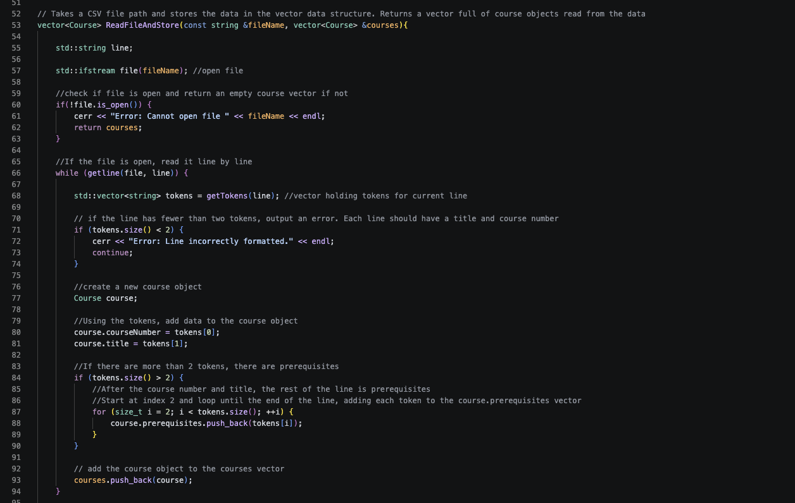
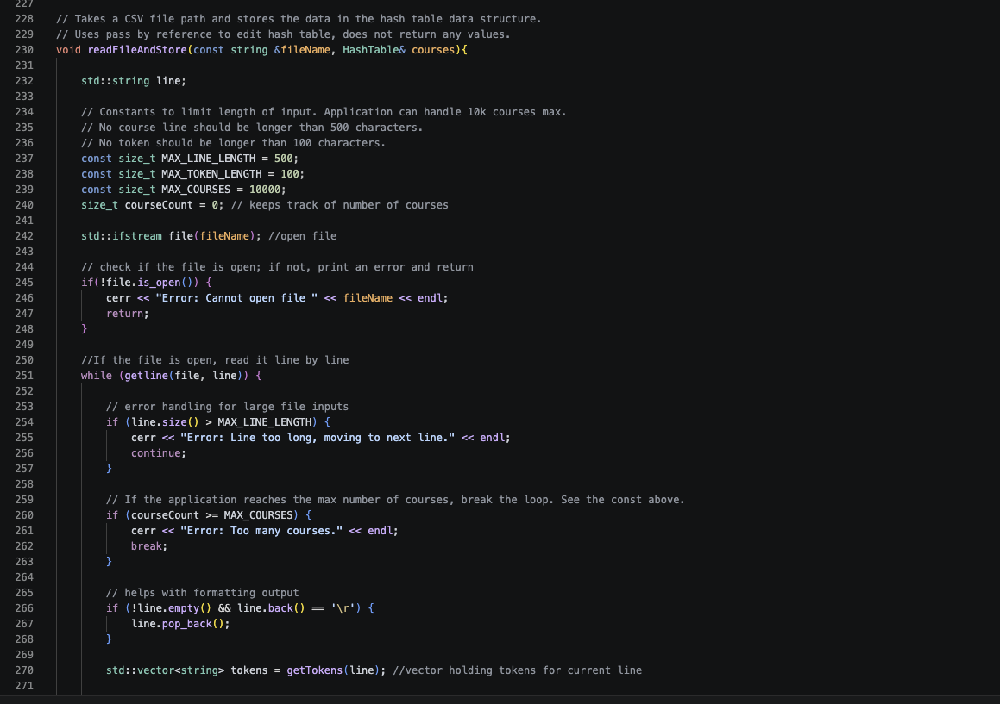
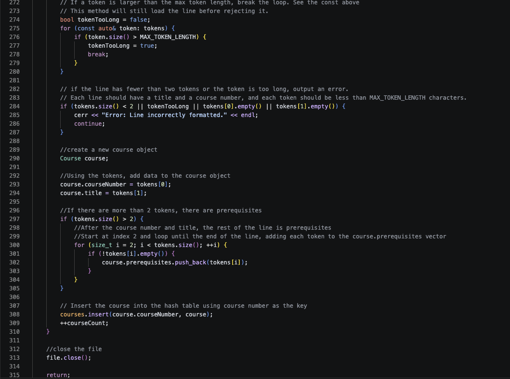

CS-499 Capstone - Enhancement Narrative
ABCU Course Planner
The ABCU data structures artifact is a C++ application for ABCU University to store and manage its computer science courses. It implements the backend or algorithmic part of the application, as it does not have a front-facing GUI and is used via the terminal. The underlying logic of the application could easily be put into a larger application. The artifact was created for CS-300 Data Structures and Algorithms on 4/12/25.
I chose this artifact in my ePortfolio for a handful of reasons. First, it directly highlights my ability to solve a problem with algorithmic principles. Second, it allows me to make updates to code I made over a year ago. In that year, I have improved significantly as a developer and wanted to make this application better. Originally, the application used a vector to store the courses. I defended this choice based on the given parameters for the project. The number of courses was very small, and a vector could store, sort, and look up just as fast as a binary search tree and a HashMap at that size.
However, let us say that ABCU wants to use the program for the entire university, or there are other universities that want to use it. They want the application to be able to find the information on a course very quickly (lookup), and sorting the courses is not a priority or a feature they care about. They also have extra computing power, so space complexity is not an issue. The vector version uses O(n) space, storing one course per element. The hash table will use O(m + n), where m is the number of buckets even if empty and n is the number of courses. If I were given these new parameters, the main reasons for me choosing a vector would no longer be valid. A hash table's main strength is lookup speed, and its main drawbacks are sorting and overhead. If the application was to be used for looking up course information and not displaying all courses or sorting them, a hash table is a natural choice. Not only will this enhancement show my ability to solve a problem using algorithms, but it shows my ability to determine which is best given the problem at hand.
This artifact was improved by swapping the vector for a hash table. Throughout this
narrative, I support why a hash table is better for ABCU's needs. I have also included
the manual testing I did in the table below and the runtime/space complexity comparison
inside this narrative. Instead of using the prebuilt std::unordered_map
class, I created my own hash table, sorting algorithm, and way to handle collisions.
Then, I incorporated that into the existing program. This enhancement shows that I can solve
problems using algorithmic principles by creating my own hash table and sorting
algorithm. By accepting a hash table with O(n^2) or O(n log n) sorting in exchange for
O(1) lookup time, I highlight my ability to manage the trade-offs in my solutions.



The process of modifying this artifact was not only a lot of fun but also a great learning experience. Even though C++ is not one of my main languages, I greatly admire and enjoy writing in it. Enhancing this artifact, I had to learn how to build a hash table without using the C++ map library. I decided that creating it as a class would fit well into this program. It allowed me to make member functions I can use to manipulate the hash table as well as abstract the logic. My original plan was to use pointers with a linked list to traverse the hash table. I learned after creating the hash table that I needed a way to store the key and the course object, not just one data type. I did some research and found that C++ has something called pairs. These allow you to hold two different data types in a single unit. This was perfect for my needs; I made the key the first element of the pair and the course object the second.
The most challenging part of the enhancement was sorting the hash table. Compared to my original implementation using a vector, the hash table has much worse sorting time. I realized that the hash table is inherently unsorted and that sorting the underlying vector used on the hash table would break the hash function. This is an acceptable trade-off, as the whole point of the enhancement was to improve lookup speed, which is O(1 + k) compared to the vector's O(n) or O(log n) if we use binary search. Another added benefit of using a hash table is that if deletion ever needs to be added, it can be done with O(1) compared to O(n) on a sorted vector. I first started by creating a member method that will loop over all the buckets and chains in the hash table and add them to a vector. This method's runtime is O(m + n), where n is the total number of courses and m is the number of buckets. The current application still uses sorting, and each time the data is loaded, it will be stored twice: once in the hash table and once in a vector used for sorting. This could be removed as sorting is not an important feature, but it is kept given the scope of changes.
Next, as part of my plan, I needed to create my own sorting algorithm. Because sorting is
not a priority and our data is still very small, I opted for insertion sort, which has a
time complexity of O(n^2) on unsorted vectors. This application will load the courses
into a normal vector at the initial load so that if the user wants to display the full
sorted list, it will be O(n), not O(n^2). I could have sorted the vector using
std::sort to improve sort time to O(n log n), but it was not a part of my
plan nor is it a feature that was requested. At smaller course amounts, insertion sort is
actually faster than merge sort or similar algorithms. Not only that, but it also adds
nearly zero additional overhead to the application when sorting is not important
(GeeksforGeeks, 2025). When the number of courses starts to reach tens or hundreds of
thousands, insertion sort will become unusable. However, many universities do not have
that many courses. The University of California, Los Angeles (UCLA) has 5,000 total
courses and is one of the largest universities in the United States
(U.S. News & World Report, 2023).
Regardless, using std::sort or removing sorting entirely in production is
needed. O(n^2) is an unacceptable time complexity if any sorting is done, and especially
when the number of courses starts to scale. However, at only 8 courses, the difference
between O(n^2) or O(n) and O(n log n) is unnoticeable. The hash table has only 10 buckets
by default for ABCU, but if it is used in a larger university, the size should be
increased either manually, or the application will do it automatically (see next
section). Finally, with the insertion sort method, I could reuse the same
printCoursesAlphanumeric method in my application that I used in the vector
version.
For security, I made a few important additions. To prevent an attacker or a stakeholder from accidentally reducing the lookup time to O(n), I set a hard limit to the length of chains to 5. If there is a collision, the hash table will start using the chains. If all or most of the courses fall into one chain, then lookup may become O(n) rather than O(1). If the length is more than 5, the hash table will rehash itself and increase its size. This will prevent all of the courses being put into one linked list and dynamically increase the size. Rehashing the table will be O(n) even with O(1) insertions because every course is rehashed into the table. I also added various checks to prevent overly large inputs when loading the data. The application can handle up to 10,000 courses, which, if deployed for each university, is more than enough. Each line and token in the line has a hard limit much higher than needed to prevent obviously incorrect data from being added to the hash table. These security additions do not make the application unbreakable but help with validating the input and preventing large inputs from being taken. This application assumes the CSV file is coming from a trusted source and contains mostly valid data.
I made a few smaller improvements to the application. I improved the output formatting
and added \r \n stripping to the CSV file, which makes the application more
robust. In the vector implementation of the application, if the user clicked on loading
the data, it would continue to add it, introducing duplicate data. However, with the hash
table, it will only update if there is already an existing key. I created a trim method
to remove whitespace from the input. I also created a method to verify the prerequisites,
so students do not take courses that do not exist. Using a hash table increases the speed
at which prerequisites can be verified. With a vector, n courses will be O(P*n), where P
is the prerequisite, and a hash table is O(P). Similar to the software design and engineering
category. I incorporated feedback by combining both implementations; the vector and hash table
in the same GitHub repo. This makes the changes made much easier to see.
| Operation | Original (Vector) | Enhanced (Hash table) |
|---|---|---|
| Lookup | O(n) unsorted, O(log n) when sorted with binary search | O(1) or O(n) in worst case |
| Insert/update | O(1) if unsorted, O(n) when sorted | O(1) |
| Display sorted | O(n log n) with std::sort |
O(m + n) + O(n^2) on initial load then O(n) after |
| Space | O(n) | O(m + n) for hash table, and O(n) for sorted vector |
| # | Test | Input | Expected | Actual | Status |
|---|---|---|---|---|---|
| 1 | Load file | Menu 1 | 8 Courses Loaded | 8 Courses Loaded | Good |
| 2 | Load twice | Menu 1 twice | No duplicates | No duplicates | Good |
| 3 | Printing or searching without loading | Menu 2, 3, or 4 | Normal cout output without course info | Normal cout output without course info | Pass but not fixed |
| 4 | Printing or searching | Menu 2, 3, or 4 | Print course info no errors | Print course info no errors | Good |
| 5 | Search course | CSCI101 | CSCI101 info | CSCI101 info | Good |
| 6 | Invalid search | CSCI40050 | Course not found output | Course not found output | Good |
| 7 | Invalid menu input | a | Please enter a number from the menu. | Please enter a number from the menu. | Good |
| 8 | Long line or token | Invalid course number in csv file over 600 chars | No crash. Load rest of data. | No crash. Loads rest of data. | Good |
| 9 | Invalid course in csv | Only course number and no course name | No crash. Course is not added. | Course was still added to hash table with just course number. | Fixed after testing |
| 10 | Negative hash table | Error message is outputted. Size is defaulted to 10. | Error message is outputted. Size is defaulted to 10. | Good | |
| 11 | Invalid prerequisite | CS999999 | Error message. No crash. | Error message. No crash. | Good |